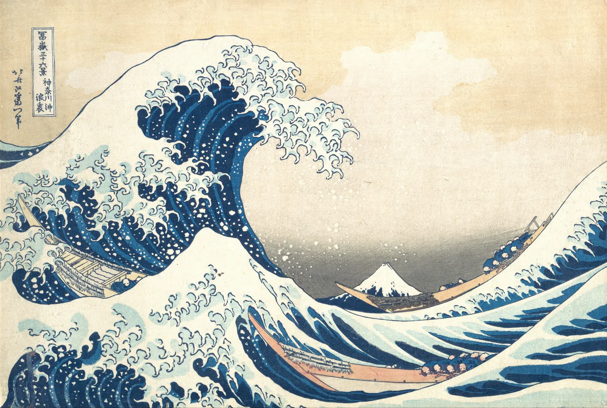

책상 위에 귤 세 개와 찻잔 하나를 놓고 사진을 찍는다. 귤을 나란히 줄 세우면 가게 진열대 같고, 둘을 붙이고 하나를 조금 떨어뜨리면 이야기가 생긴다. 찻잔을 한가운데 두면 증명사진 같고, 한쪽으로 밀어 두면 빈자리가 무언가를 기다리는 것처럼 보인다. 물건은 하나도 바뀌지 않았다. 바뀐 것은 놓인 자리뿐이다. 이 장은 "어디에 놓을 것인가"라는 질문이 왜 그림 전체를 바꾸는지 둘러보고, 앞으로 열두 장에서 하나씩 풀어 갈 도구들을 한 장의 지도 위에 펼친다.
같은 요소를 다르게 놓으면 고요함, 긴장, 움직임, 흩어짐처럼 전혀 다른 인상이 생긴다는 것을 직접 확인한다.
화면의 테두리와 중심이 그 안의 점 하나에 힘을 미친다는 생각(구조의 뼈대)을 이해한다.
구도를 배우는 네 갈래, 요소·지각·질서·쓰임이 각각 어떤 질문에 답하는지 안다.
색을 빼고 흑백 덩어리로 보는 습관이 배치를 먼저 보게 해 준다는 것을 명작 위에서 본다.
3분할·황금비 같은 규칙을 출발점으로 쓰되, 선은 언제든 끼워 맞출 수 있다는 한계를 직접 재 본다.
같은 것, 다른 자리
그림, 사진, 포스터, 웹 화면은 모두 네모난 평면 위에 무언가를 놓는 일이다. 무엇을 그릴지(주제)와 어떤 색을 쓸지(색채) 못지않게, 그것들을 어디에, 얼마나 크게, 무엇과 얼마나 가깝게 놓을지가 화면을 결정한다. 화면 안에 요소를 놓고 짜는 이 일 전체를 구도(Composition)라고 부른다. 라틴어 componere, "함께 놓다"에서 온 말이다. 구도는 그림에만 있는 말이 아니다. 같은 일을 디자이너는 레이아웃, 사진가는 프레이밍, 동아시아 화론은 경영위치(經營位置)라고 불렀다. 경영위치는 중국 남제의 사혁이 그림의 여섯 원칙(육법)을 꼽으며 그중 하나로 든 말로, 화면 안에 사물의 자리를 꾀하여 정한다는 뜻이다.
아래 그림의 네 칸에는 모두 같은 세 요소가 들어 있다. 짙은 큰 원 하나, 붉은 작은 원 하나, 가는 선 하나. 크기도 색도 같다. 놓인 자리만 다르다.
그림 1. 같은 세 요소, 네 가지 자리. A는 가운데 축 위에 쌓아 움직일 이유가 없어 보인다. B는 큰 원이 모서리에 몰려 화면이 한쪽으로 기울고, 테두리에 닿을 듯한 원이 긴장을 만든다. C는 세 요소가 한 대각선 위에 놓여 왼쪽 아래에서 오른쪽 위로 움직이는 듯하다. D는 요소들이 서로 비슷한 거리로 떨어져 아무 관계도 없어 보인다. 오른쪽 아래의 낱말은 이 책이 붙인 인상의 이름일 뿐, 보는 사람마다 조금씩 다르게 느낄 수 있다.
네 칸 중 어느 것이 "좋은 구도"인가를 묻는 것은 의미가 없다. 조용한 정물이라면 A가, 불안한 장면이라면 B가, 바람 부는 날이라면 C가 맞을 수 있다. D조차 "서로 모르는 사람들이 오가는 광장"을 그린다면 쓸모가 있다. 구도는 정답 찾기가 아니라 전하려는 것과 놓인 자리가 맞는지를 보는 일이다. 이 책은 끝까지 그 질문으로 판단한다.
이제 같은 질문을 실제 일에 대어 본다. 아래는 겨울 쇼윈도에 표지가 보이게 세운 책 열두 권이다. 처음에는 모두 같은 간격으로 서 있다. 첫 번째 슬라이더로 책을 무리 지어 모으고, 두 번째 슬라이더로 한 권을 주인공으로 키워 본다.
SIMULATOR
줄 세우기에서 무리로
간격이 고른 정도(변동 계수)—
보이는 무리 수—
가장 큰 책 ÷ 보통 책—
해볼 것: ① 처음 상태를 본다. 간격의 변동 계수가 0, 모든 간격이 똑같고 무리는 "고른 한 줄" 하나다. 책은 다 보이지만 눈이 어디에도 머물지 않는다. ② 무리 짓기를 60 근처로 올린다. 열두 권이 네·다섯·세 권의 세 무리로 모이고, 무리 사이의 빈자리가 생기면서 화면에 박자가 생긴다. 주인공 크기를 1.6쯤으로 올리면 가운데 무리의 붉은 책이 먼저 보인다. ③ 무리 짓기를 100까지 민다. 모든 책이 왼쪽 한 더미로 뭉쳐 창의 대부분이 비고, 무리는 하나가 된다. 모으기도 끝까지 밀면 무너진다. (간격의 변동 계수는 책 사이 빈틈들의 표준편차를 평균으로 나눈 값이다. "무리"는 빈틈이 빈틈들의 중앙값보다 1.6배 넘게 넓은 곳에서 나눈 이 시뮬레이터의 단순한 기준이고, 실제로 묶여 보이는 조건은 4장에서 다룬다.)
간격이 똑같을 때 오히려 아무것도 눈에 띄지 않는 이유는, 눈이 차이를 따라 움직이기 때문이다. 모든 간격과 크기가 같으면 어디서 시작하고 어디서 멈춰야 할지 알려 주는 단서가 없다. 무리를 짓고 한 권을 키우면 차이가 생기고, 차이가 곧 읽는 순서가 된다. 하지만 차이만 크다고 좋은 것도 아니다. 끝까지 밀어 한 더미로 몰면 다시 읽을 것이 없어진다. 구도는 대개 이 두 끝 사이 어딘가에서 정해진다.
화면이라는 무대
구도를 생각할 때 흔히 놓치는 요소가 하나 있다. 화면 자체다. 테두리가 없는 하늘에 떠 있는 새는 그냥 새지만, 네모 안에 들어온 새는 "위쪽 가장자리 가까이", "가운데에서 조금 왼쪽" 같은 자리를 갖는다. 화면의 테두리와 중심, 그리고 그 사이를 잇는 축과 대각선이 안에 놓인 것들에 보이지 않는 힘을 미치는 것처럼 느껴진다.
미술 심리학자 루돌프 아른하임(Rudolf Arnheim, 1904–2007)은 『미술과 시지각』(Art and Visual Perception, 1954; 개정판 1974)에서 이것을 정사각형의 구조의 뼈대(Structural skeleton)라고 불렀다. 그는 빈 정사각형 안에 원판 하나를 여러 자리에 놓고, 사람들이 그 원판을 어떻게 느끼는지를 설명했다. 중심이나 축 위에 놓인 원판은 안정되어 보이고, 중심에서 아주 조금 비킨 원판은 "가운데로 가려다 만" 것처럼 애매해 보이며, 테두리 가까이의 원판은 테두리 쪽으로 끌리는 듯하다는 것이다. 아래에서 직접 점을 끌어 본다.
SIMULATOR
점 하나의 자리
점을 끈다
중심에서 떨어진 정도—
가장 가까운 가장자리—
이 자리의 인상—
해볼 것: ① 점을 정확히 가운데에 둔다. 아무 데로도 가지 않을 것처럼 고요하다. 그다음 중심에서 손톱만큼만 비켜 본다. 실수로 어긋난 것처럼 보이는 그 "애매한 자리"가 중심보다 오히려 불편하다. ② 점을 대각선을 따라 모서리 쪽으로 끌어간다. 점이 모서리로 빨려 들어가거나 거기서 튀어나오는 듯하다. 가장자리에 거의 붙이면 화면 밖으로 나가려는 것처럼 보인다. ③ 세로 2:3으로 바꾸고 같은 실험을 한다. 같은 점도 위쪽에 있을 때와 아래쪽에 있을 때 무게가 달라 보인다. (인상의 이름은 아른하임의 설명을 이 책이 거리 기준으로 단순하게 나눈 것이다. 중심 5% 이내는 "중심", 18% 이내는 "애매함", 가장자리 4% 이내는 "붙음"으로 정했다. 실제 느낌은 사람과 화면에 따라 다르다.)
점 하나로도 화면이 고요해지거나 긴장한다. 점을 선으로, 선을 면으로 늘리면 이 힘은 더 복잡해진다. 그 이야기가 2장이다. 테두리 가까이의 긴장은 자르기를 다루는 11장에서 다시 만난다.
"보이지 않는 힘"은 비유다
아른하임은 게슈탈트 심리학의 영향 아래, 지각된 형태에는 방향과 세기를 가진 "지각의 힘"이 있다고 설명했다. 이 설명은 화가와 디자이너에게 오랫동안 쓸모 있는 언어였지만, 물리적인 힘을 잰 것이 아니라 관찰과 내성(자기 느낌을 돌아보기)에 기댄 이론이다. 뒤의 연구자들은 사람들에게 점의 자리를 고르게 하거나 좋고 싫음을 매기게 하는 실험으로 일부 주장을 확인하거나 반박해 왔고, 결과는 과제와 문화에 따라 다르다. 이 책은 "힘"이라는 말을 화면을 설명하는 편리한 비유로 쓰고, 측정할 수 있는 부분(무게중심, 여백 비율, 격자까지의 거리)은 따로 계산해서 보여 준다.
네 갈래: 요소·지각·질서·쓰임
구도를 배우는 길은 네 갈래로 나눌 수 있다. 이 책의 네 부가 이 순서를 따른다. 갈래마다 묻는 질문이 다르다.
요소는 "화면에 무엇이 있는가"를 묻는다. 점·선·면, 그리고 그린 것(형)과 남긴 것(바탕). 그림의 낱말에 해당한다(2장, 3장).
지각은 "눈은 그것을 어떻게 읽는가"를 묻는다. 가까운 것끼리 묶여 보이고, 눈이 특정한 길로 움직이고, 평평한 화면에 깊이가 생긴다(4장~6장).
질서는 "어떻게 짜면 안정되거나 살아 있어 보이는가"를 묻는다. 균형, 리듬, 비례, 여백(7장~10장).
쓰임은 "구도는 실제로 어디서 일하는가"를 묻는다. 자르기, 포스터와 웹 화면, 그리고 명작이 화면을 짠 방식(11장~13장).
그림 2. 구도를 배우는 네 갈래. 같은 작은 장면(해, 나무, 지평선, 사람)을 네 갈래의 눈으로 본다. 요소의 눈은 무엇이 점이고 선이고 면인지, 지각의 눈은 눈이 어떤 길로 움직이는지, 질서의 눈은 격자와 무게의 받침점, 쓰임의 눈은 어디서 자르고 글자를 어디에 둘지 본다. 책은 이 순서로 가지만 실제로 그림을 짤 때는 네 가지를 한꺼번에 본다.
네 갈래는 서로 기대어 있다. 균형(질서)을 따지려면 무엇이 무거워 보이는지(지각)를 알아야 하고, 무거워 보이는 정도는 면의 크기와 명도(요소)에 달려 있다. 포스터를 만드는 일(쓰임)은 앞의 세 갈래를 한꺼번에 쓰는 일이다. 그래서 이 책은 앞 장의 도구를 뒤 장에서 계속 다시 꺼낸다.
종이 조각으로 네 가지 배치
검은 종이에서 큰 원 하나(지름 5 cm), 색종이에서 작은 원 하나(지름 1.5 cm), 가는 띠 하나(길이 8 cm)를 오린다. 엽서 크기의 흰 종이 네 장을 준비하고, 같은 세 조각을 매번 다르게 놓는다. 한 번은 가장 고요하게, 한 번은 가장 불안하게, 한 번은 움직이는 것처럼, 한 번은 아무 관계도 없어 보이게. 놓을 때마다 휴대폰으로 위에서 찍어 두고, 네 장을 나란히 놓은 뒤 다른 사람에게 어느 것이 어느 인상인지 맞혀 보게 한다. 맞히지 못한 칸이 있다면 그 칸에서 무엇을 더 밀어야 할지(더 가장자리로? 더 대각선으로?) 적는다.
덩어리로 먼저 본다
그림 앞에 서면 눈은 먼저 무엇이 그려져 있는지, 어떤 색인지를 읽는다. 그런데 구도를 보려면 거꾸로 해야 한다. 무엇이 그려져 있는지 잠시 잊고, 화면이 어두운 덩어리와 밝은 덩어리로 어떻게 나뉘는지부터 본다. 아래 판화는 구도를 공부하는 사람이라면 한 번은 들여다보는 그림이다.

그림 3. 가쓰시카 호쿠사이, 「가나가와 앞바다의 파도 아래」(『후가쿠 36경』 중), 1830–32년경. 화면의 주인공은 왼쪽의 거대한 파도지만, 제목이 말하는 산은 파도 골 사이의 작은 삼각형이다. 큰 곡선 덩어리가 왼쪽 위에서 오른쪽 아래로 화면을 휘감고, 그 안쪽의 빈 하늘과 멀리 작은 산이 그 힘을 받아 낸다. 오른쪽 위 "흑백" 단추를 눌러 명도만 남기면, 파도의 짙은 남색과 하늘의 밝은 바탕이 거의 두 덩어리로 나뉜다.메트로폴리탄 미술관 소장(H. O. Havemeyer Collection, Bequest of Mrs. H. O. Havemeyer, 1929), 목판화, 종이에 먹과 색. 공공 도메인(The Met Open Access, CC0). 소장처 작품 페이지 · 크레딧
이렇게 화면을 두세 단계의 명도 덩어리로 줄여 보는 방법을 일본어에서 온 말로 노탄(Notan, 濃淡)이라고 부른다. 짙음과 옅음이라는 뜻이다. ColorBook 6장에서 색의 명도 구조를 볼 때 썼던 바로 그 도구를, 이 책에서는 배치를 보는 데 쓴다. 아래에서 경계선을 끌어 원본과 노탄을 비교하고, 명도 경계를 움직여 본다.
SIMULATOR
큰 파도를 덩어리로 보기
어두운 덩어리—
중간—
밝은 덩어리—
해볼 것: ① 두 단계, 경계 72에서 경계선을 왼쪽으로 끈다. 파도와 배 아래의 짙은 물이 하나의 큰 갈고리 모양 덩어리가 되고, 하늘과 물보라가 그 반대 모양의 밝은 덩어리가 된다. 후지산은 작지만 수평선 쪽의 어두운 띠 위에 흰 삼각형으로 또렷이 남는다. 경계를 55로 내리면 그 띠가 밝은 쪽으로 넘어가면서 산이 하늘에 녹아 사라진다. ② 세 단계로 바꾼다. 옅은 파랑 물결과 수평선 근처의 하늘이 중간 단계로 떨어지면서 흰 물보라, 산꼭대기, 위쪽 하늘이 따로 떠오른다. ③ 경계를 15나 90 끝까지 민다. 거의 전부가 한 덩어리가 되어 구도가 사라진다. 노탄은 "적당한 경계"에서만 구도를 보여 준다. (명도는 원본 픽셀의 CIELAB L*로 계산했다. 세 단계는 경계값과 그보다 15 높은 값 두 개로 나눈다. 판화 종이의 변색과 인쇄 상태도 명도에 섞여 있다.)
노탄으로 보면 큰 파도 그림이 왜 멀리서도 한눈에 읽히는지 드러난다. 파도, 물보라, 배, 산이 모두 몇 개의 큰 덩어리 안에 정리되어 있고, 그 덩어리들의 경계가 화면을 크게 휘감는 곡선을 만든다. 세부(물보라의 손가락, 배 안의 사람들)는 덩어리 안에서만 일한다. 덩어리가 먼저, 세부는 나중이다. 이 순서는 그림뿐 아니라 쇼윈도와 포스터에도 그대로 적용된다.
썸네일은 우표만 하게, 연필 한 자루로
많은 화가와 디자이너가 본 작업 전에 썸네일 스케치(Thumbnail sketch)를 여러 장 그린다. 요령은 작게, 빨리, 흑백으로다. 우표나 명함만 한 네모를 여러 개 그려 놓고, 한 장에 1~2분만 쓴다. 세부를 그릴 자리가 없을 만큼 작아야 덩어리와 배치만 남는다. 연필은 두세 가지 명도(종이의 흰색, 옅은 회색, 짙은 회색)만 쓴다. 다 그린 썸네일은 팔을 쭉 뻗어 멀리서 보거나 눈을 가늘게 뜨고 본다. 그래도 읽히는 것만 다음 단계로 간다. 색과 세부는 배치가 정해진 뒤에 얹는다.
규칙은 출발점이다
구도를 처음 배우면 몇 가지 규칙을 먼저 만난다. "주인공을 한가운데 두지 마라", "지평선은 화면을 반으로 나누지 마라", "3분할 선 위에 놓아라". 이 규칙들은 쓸모가 있다. 처음 사진을 찍는 사람은 대개 모든 것을 한가운데에 두고, 지평선을 정확히 반에 두기 쉽다. 규칙은 그 버릇에서 벗어나 다른 자리를 시도해 보게 하는 손잡이다.
3분할 법칙(Rule of thirds)은 화면을 가로세로 세 등분하는 선 두 개씩을 긋고, 지평선이나 주인공을 그 선이나 교차점 근처에 두라는 요령이다. 영국의 판화가 존 토머스 스미스(John Thomas Smith)가 1797년 책 『시골 풍경에 대한 소견』(Remarks on Rural Scenery)에서 그림의 밝고 어두운 부분의 비율을 이야기하며 처음 이 이름을 썼다고 알려져 있다. 오래된 화가의 비밀이라기보다 18세기 말에 이름이 붙은 실용적인 요령이다.
아래에서 지평선의 높이를 바꿔 본다. 화면 오른쪽의 눈금은 가운데, 3분할 선, 황금비 선의 자리다.
SIMULATOR
지평선을 어디에
지평선을 위아래로 끈다
하늘 : 땅(물)—
가장 가까운 기준선—
해볼 것: ① 겨울 들판에서 지평선을 50%(정확히 반)에 둔다. 하늘과 땅이 같은 넓이로 다투어 어느 쪽이 주인공인지 모호하다. 33%로 올리면 땅과 나무가, 67%로 내리면 하늘이 주인공이 된다. ② 고요한 호수로 바꾸고 다시 50%에 둔다. 물에 비친 산이 위의 산과 대칭을 이루면서, 반으로 나눈 화면이 오히려 고요함을 만든다. "지평선을 반에 두지 마라"는 규칙이 맞지 않는 장면이다. ③ 지평선을 2%나 98%까지 민다. 하늘이나 땅이 거의 사라진다. 이것도 실패만은 아니다. 눈 덮인 땅의 무늬만 보여 주고 싶다면 하늘을 없애는 것이 답일 수 있다. (기준선의 판정은 가장 가까운 선까지의 거리일 뿐, 어느 선이 더 좋다는 뜻이 아니다.)
규칙이 맞지 않는 순간은 생각보다 자주 온다. 대칭 자체가 주제인 장면(반영, 정면의 건축, 의례), 일부러 불안을 주려는 장면, 텅 빈 넓이를 보여 주려는 장면에서는 한가운데나 극단적인 자리가 더 정확하다. 동아시아 회화에는 아예 다른 습관도 있다. 중국 남송의 화가 마원(馬遠)과 하규(夏珪)는 경물을 화면의 한 귀퉁이나 한쪽 절반에 몰고 나머지를 비워 두는 구도를 즐겨 써서, 후대에 각각 "마일각(馬一角)", "하반변(夏半邊)"이라는 별명을 얻었다. 3분할 격자를 대면 "한쪽으로 쏠린 실패작"처럼 보일 화면이, 비운 자리를 그림의 일부로 읽는 전통 안에서는 의도된 구성이다. 여백은 10장에서, 동서양 화면의 차이는 13장에서 다시 본다.
규칙을 지키고, 깨고, 비교한다
사진가들이 흔히 권하는 연습이 있다. 같은 장면을 세 번 찍는다. 한 번은 규칙대로(3분할 선 위에), 한 번은 일부러 규칙을 깨서(정확히 한가운데, 또는 가장자리에 아슬아슬하게), 한 번은 아무 생각 없이. 집에 와서 세 장을 나란히 놓고 어느 것이 그 장면에서 느낀 것에 가장 가까운지 고른다. 의외로 규칙을 깬 사진이 뽑히는 날이 꽤 있다. 중요한 것은 그 선택이 우연이 아니라 비교의 결과라는 점이다. 규칙은 비교할 기준을 하나 더 주는 도구로 쓸 때 가장 쓸모 있다.
선은 언제든 맞출 수 있다
3분할보다 더 유명한 규칙이 황금비(Golden ratio)다. 선분을 두 부분으로 나눌 때 전체 대 긴 부분이 긴 부분 대 짧은 부분과 같아지는 비율로, 값은 약 1.618이다.
\(\varphi\)(파이): 황금비. 화면의 한 변을 0.382 : 0.618로 나누는 선이 "황금비 격자"다. 3분할 격자는 0.333 : 0.667로 나누므로, 두 격자는 변 길이의 5%쯤밖에 차이 나지 않는다.
"명작은 황금비로 그려졌다"는 말을 자주 듣는다. 그런데 이 말을 확인하는 방식에는 함정이 있다. 그림 위에 격자를 대 보고 "중요한 것"이 선 근처에 있으면 맞았다고 한다. 하지만 무엇이 중요한 점인지, 얼마나 가까워야 "근처"인지는 재는 사람이 정한다. 아래는 큰 파도 위에 이 책이 눈으로 고른 일곱 점(산꼭대기, 파도 마루, 물보라 끝, 배 세 척, 제목 칸)이다. 허용 오차를 바꾸고, 점을 끌어 옮겨 본다.
SIMULATOR
격자 끼워 맞추기
점을 끈다
3분할 선 위의 점—
황금비 선 위의 점—
0.42 선 위의 점—
해볼 것: ① 허용 오차 2%에서 세 격자를 비교한다. 이 책이 고른 점으로 계산하면 황금비 선 위에 셋, 3분할 선 위에 하나도 없고, 아무렇게나 고른 0.42 선 위에 하나다. 황금비가 맞는 것처럼 보인다. ② 허용 오차를 8%로 올린다. 3분할 다섯, 황금비 여섯, 0.42도 여섯이 된다. 오차를 넉넉히 주면 거의 어떤 선도 "맞는다". ③ 점 하나를 끌어 파도 마루의 다른 곳으로 옮겨 본다. 같은 파도 마루라도 어디를 "마루"로 찍느냐에 따라 결과가 바뀐다. 점을 고르는 사람이 결과도 고른다. (점의 위치는 이 책이 눈으로 정한 것이다. 한 점이 세로선이나 가로선 하나에 허용 오차 안으로 가까우면 "선 위"로 센다. 오차는 그 방향 변 길이에 대한 비율이다.)
이 실험은 호쿠사이가 황금비를 썼다는 증거도, 쓰지 않았다는 증거도 아니다. 보여 주는 것은 하나다. 점과 허용 오차를 고를 자유가 있으면, 격자는 거의 언제나 "맞출" 수 있다. 그래서 그림 위에 선을 대 보는 일은 그림을 읽는 좋은 연습이지만, 화가의 의도를 증명하는 방법은 되지 못한다.
황금비 신화는 근거가 약하다
파르테논 신전, 레오나르도 다빈치의 그림, 이집트 피라미드가 황금비로 설계되었다는 주장은 대중서에 흔하지만, 그 대부분은 사후에 선을 끼워 맞춘 것이라는 비판을 받는다. 수학자 조지 마르코스키(George Markowsky)는 「황금비에 대한 오해」(Misconceptions about the Golden Ratio, The College Mathematics Journal, 1992)에서 이런 주장들이 측정 기준을 제멋대로 고르고 오차를 무시한다고 지적했다. 사람들이 황금 직사각형을 다른 직사각형보다 더 좋아한다는 실험 결과도 연구마다 엇갈린다. 이 책은 황금비를 "명작의 비밀"이 아니라 3분할과 비슷한 점검 도구 하나로 다루고, 그 수학과 신화는 9장에서 자세히 가른다.
이 책의 지도
지금까지 이 장에서 만난 질문들은 각각 한 장씩의 주제가 된다. 점 하나의 자리는 2장, 덩어리와 빈자리는 3장, 책이 무리 지어 보이는 이유는 4장, 눈이 움직이는 순서는 5장, 지평선의 높이와 공간은 6장, 한쪽으로 쏠린 화면은 7장, 같은 간격의 단조로움은 8장, 격자 끼워 맞추기는 9장, 비운 자리는 10장의 주제다.
그림 4. CompositionBook의 지도. 1장을 가운데 두고 2~13장이 시계 방향으로 둘레를 돈다. 칸의 색은 부를 나타낸다. 요소(2·3장)에서 화면의 낱말을 익히고, 지각(4~6장)에서 눈이 그것을 읽는 방식을, 질서(7~10장)에서 짜는 도구를, 쓰임(11~13장)에서 실제 일에 쓰는 법을 본다. 둘레를 다 돌면 14장 실험실에서 모든 도구를 한꺼번에 쓴다. 칸을 누르면 그 장으로 간다(준비 중인 장은 흐리게).
마지막 시뮬레이터는 이 지도를 손에 쥐어 본다. 액자 안에 해(붉은 원), 나무, 집, 사람, 지평선 띠의 다섯 도형이 있다. 도형을 끌어 옮기거나 위의 단추로 미리 짜 둔 네 구도를 불러온다. 아래 숫자판은 같은 배치를 이 책의 여러 장의 눈으로 동시에 잰 값이다. 칸마다 그 값을 자세히 다루는 장을 적었다.
SIMULATOR
한 장면, 여러 구도
도형을 끈다
무게중심 치우침 · 7장—
격자 교차점까지 평균 · 9장—
묶여 보이는 무리 · 4장—
먼저 보일 것 · 5장—
여백 비율 · 10장—
가장자리 긴장 · 2·11장—
해볼 것: ① "가운데"에서 시작한다. 무게중심이 거의 한가운데라 지렛대가 수평이고, 다섯 도형이 한 무리로 묶인다. 안정되지만 사진관의 기념사진 같다. ② "한쪽 쏠림"을 누른다. 무게중심이 왼쪽으로 크게 치우치고 지렛대가 기운다. 이제 해를 끌어 오른쪽 위 빈 하늘로 옮겨 본다. 작은 붉은 원 하나가 큰 덩어리와 맞서며 지렛대가 수평에 가까워진다. 비대칭 균형이다(7장). ③ "흩어짐"을 누른다. 무리가 다섯으로 갈라지고 여백 비율은 거의 그대로인데 화면은 산만해진다. 같은 여백도 어떻게 모이느냐에 따라 다르게 일한다(10장). ④ "3분할"에서 격자를 켜고 교차점까지의 평균 거리를 본다. 숫자가 작다고 더 좋은 그림은 아니다. ①의 "가운데"와 나란히 놓고 어느 쪽이 전하려는 것에 맞는지 판단한다. (모두 이 책의 교육용 근사다. 시각적 무게는 넓이 × (어두움 + 채도 보정), 시선 순서는 넓이의 제곱근 × 바탕과의 명도 차 × 고립 보정으로 매긴 순위, 무리는 도형 사이의 빈틈이 화면 높이의 8%보다 좁으면 잇는 방식, 가장자리 긴장은 도형이 테두리에서 화면 높이의 3% 안쪽에 있으면서 닿지 않은 경우다. 실제 지각은 훨씬 복잡하고, 각 장에서 모형의 한계와 함께 다시 다룬다.)
같은 다섯 도형이 숫자판 위에서 전혀 다른 얼굴을 보인다. 무게중심이 정확히 가운데인 배치는 안정되지만 지루할 수 있고, 격자 교차점에 꼭 맞춘 배치가 반드시 살아 있지도 않다. 숫자는 판단을 대신하지 않는다. 숫자는 눈이 놓친 것을 짚어 주고, 두 배치를 비교할 말을 준다. 결국 남는 질문은 이 장 처음과 같다. 이 화면은 무엇을 전하려는가, 그리고 놓인 자리들이 그 일을 하고 있는가.
구도 일지 시작하기
작은 공책 한 권을 구도 일지로 정한다. 하루에 한 번, 눈에 띈 장면 하나(창밖, 가게 진열, 포스터, 식탁)를 우표만 한 네모 안에 흑백 덩어리로만 1분 동안 그린다. 옆에 세 가지를 적는다. 가장 먼저 눈이 간 곳, 가장 무거워 보이는 덩어리, 비어 있는 곳. 대상의 이름은 적지 않는 것이 규칙이다. 일주일 뒤에 다시 보면, 좋아 보였던 장면들이 어떤 배치를 공유하는지 보인다. 이 책을 읽는 동안 이 일지가 장마다 실습 재료가 된다.
서윤의 겨울 작업 노트
CASE 서윤작업 노트 · 1장
다 보이는데 아무것도 안 보이는 쇼윈도
가을에 책방 E의 색을 정한 윤서윤(ColorBook)에게 주인이 겨울 일을 부탁했다. "겨울에는 창 앞에서 사람들이 멈춰 섰으면 좋겠어요." 일은 넷이다. 폭 약 2.4 m의 겨울 쇼윈도 진열(책 20여 권과 소품), 연말 낭독회 포스터(A2 세로), 가로 화면과 휴대폰을 함께 고려한 웹사이트 첫 화면 개편, 그리고 서윤 자신의 겨울 수채화 연작 두 점, 「눈 오는 골목」과 「창가의 귤」이다. 색은 가을에 정한 책방 초록 #2f7d5b, 크림 #ffe2d7, 차분한 초록 #567666, 강조 #d24f39, 짙은 색 #22342a를 그대로 쓴다.
서윤의 첫 진열은 성실했다. 신간 스무 권을 표지가 보이게 두 단에 열 권씩 세웠다. 책 한 권의 폭을 15 cm로 잡으면 한 단에 책이 150 cm를 차지하고, 남은 90 cm를 빈틈 열한 곳에 똑같이 나누면 간격은 약 8.2 cm다. 모든 책이 같은 높이, 같은 간격이었다. 퇴근길에 길 건너편에서 창을 본 서윤은 수첩에 이렇게 적었다. "다 보이는데, 아무것도 안 보인다." 위의 첫 시뮬레이터에서 간격의 변동 계수가 0인 상태, 그것이었다.
다음 날 멘토인 화가 한도경이 서점에 들렀다. 도경은 진열을 고치는 대신 서윤의 가을 수채화 세 점을 안쪽 벽에 대 보며 말했다. "그림은 놓는 자리에서 시작된다. 무엇을 넣을지보다 어디에 놓을지를 먼저 봐. 색은 잠깐 잊고." 그러고는 계산대의 영수증 뒷면에 우표만 한 네모 세 개를 그리고 연필로 덩어리만 칠했다. 서윤은 휴대폰 사진을 흑백으로 바꾸는 법을 도경에게 알려 주었고, 도경은 그걸로 진열 사진을 흑백으로 보더니 "봐, 회색 띠 두 줄이지" 하고 웃었다. 두 사람은 이번 겨울 작업을 이 책의 순서대로 함께 기록하기로 했다.
이 장에서 정한 것진열·포스터·웹 모두 색과 세부를 정하기 전에 흑백 썸네일 스케치(우표 크기, 두세 가지 명도, 장마다 1~2분)로 배치부터 본다. 썸네일은 최소 세 장을 그려 비교한 뒤 하나를 고른다.
아직 남은 문제책과 소품, 선반과 리본을 무엇으로 보아야 배치가 보이는가. 포스터의 첫 썸네일 세 장은 무엇을 기준으로 다르게 그릴 것인가.